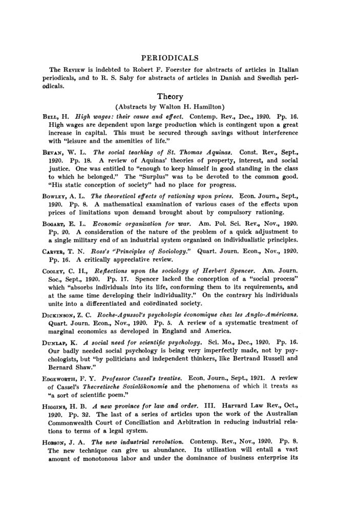

A taxa de desconto, a dívida de guerra e o produto medido em toneladas
Leitura: 21 min
Davenport liga a dívida de guerra ao futuro da democracia; Sprague e Leffingwell discutem o que deve guiar a taxa de desconto do Federal Reserve; Stewart mede a produção física dos Estados Unidos desde 1890.


Em 29 de dezembro de 1920, em Atlantic City, Herbert J. Davenport, da Cornell University, encerrou seu mandato de presidente da American Economic Association com um discurso sobre o pós-guerra. Seu número de partida era o tamanho da conta: o mundo tinha agora de lidar com 250 bilhões em dívidas de guerra. A pergunta que tirava daí não era fiscal, mas política: se uma democracia política consegue durar quando a dívida pública reparte, por gerações, a renda futura entre credores e contribuintes.
O número de março de 1921 abre com esse discurso e com outros textos lidos na mesma reunião, a trigésima terceira da associação: O. M. W. Sprague, de Harvard, sobre a política de redesconto dos bancos do Federal Reserve, com a resposta de R. C. Leffingwell; Leo Wolman, da New School for Social Research, sobre os limites da teoria da produção; e Walter W. Stewart, do Amherst College, com um número-índice da produção física dos Estados Unidos desde 1890, discutido por Carl Snyder, H. S. Person e Willford I. King. Completam a parte principal uma análise de John R. Commons sobre a constituição socialista proposta por Sidney e Beatrice Webb e duas comunicações: Harold L. Reed sobre o dólar estabilizado de Irving Fisher e L. D. H. Weld sobre a integração na comercialização. O fio comum é a medida: quanto crédito, quanto produto, quanta dívida, e o que a moeda esconde quando serve de régua.
A democracia política sobrevive à dívida de guerra?
Herbert J. Davenport (Cornell University) · “The Post-War Outlook” · pp. 1–15
Davenport começa por declarar sua posição. É democrata, acredita no governo popular e na igualdade de direitos, mas não é socialista: defende a concorrência, desde que regulada. Para ele, liberdade e coerção são princípios bons, cada um em seu lugar, e o problema prático é ajustá-los. Por isso pede que reformadores de escolas diferentes, socialistas e defensores do imposto único, se unam nas medidas próximas em que concordam, como impostos progressivos e sobre heranças, e deixem para depois as divergências sobre o destino final da sociedade.
A sociedade que ele toma como ideal é a da igualdade de oportunidades: desigual apenas pelas diferenças de capacidade e de realização, sem privilégios herdados. Uma sociedade competitiva que se estratifica, passando de geração em geração as vantagens acumuladas, está, diz, gravemente doente. E democracia política e aristocracia econômica não convivem por muito tempo: uma das duas acaba por perecer.
É aqui que entra a guerra. Davenport sustenta que ela não empobreceu o mundo no sentido próprio, porque se pagou com a produção corrente: nem empréstimos nem impostos tornam disponível hoje um produto futuro. Empréstimos e impostos diferem apenas no que vem depois. O imposto termina num recibo; o título é o começo de uma redistribuição da renda futura em favor de quem o comprou. A escolha real, portanto, não estava entre impostos e empréstimos, mas entre impostos e inflação, porque nenhuma taxa de juros crível atrairia poupança suficiente para uma guerra grande.
Como a guerra foi financiada sobretudo por títulos e inflação, os títulos foram comprados em boa parte com lucros que a própria inflação criou, e as massas que pagaram esses lucros pagarão depois, em impostos, os juros e o principal. A dívida é o efeito que não passa com os anos. A primeira tarefa da política econômica, conclui, é retirá-la, por impostos sobre a renda e sobre heranças, por impostos altos sobre a intermediação e, se necessário, por tributação do capital.
“Peço radicalismo para fins conservadores, um conservadorismo progressista.” (“I plead for radicalism to conservative ends, for a progressive conservatism.”)
O que deve guiar a taxa de redesconto?
O. M. W. Sprague (Harvard University) · “The Discount Policy of the Federal Reserve Banks” · pp. 16–29
Sprague faz o balanço de pouco mais de seis anos de funcionamento dos bancos do Federal Reserve. Seu primeiro ponto é monetário: o novo sistema mais que dobrou a oferta disponível de crédito, e esse acréscimo foi inteiramente absorvido em menos de seis anos. As exigências de reserva dos bancos membros passaram a ser só depósitos nos bancos de reserva, de 7%, 10% e 13% conforme a categoria, e a nota do Federal Reserve, emitida como instrumento de crédito, permitiu atrair e reter ouro que antes circularia nos bolsos.
A responsabilidade pela expansão, diz, está quase toda fora do Federal Reserve: no ouro importado antes da entrada dos Estados Unidos na guerra e na política de finanças de guerra do Tesouro, que o banco central tinha o dever de executar. Só a partir do fim de 1919 os bancos de reserva retomaram o controle, e as altas sucessivas das taxas de desconto em 1920 foram em grande parte impostas pela própria escassez de reservas. A taxa de desconto se mostrou eficaz, mas lenta; Sprague propõe que as altas sejam feitas em degraus de um ponto percentual, como no Banco da Inglaterra, porque frações de ponto não funcionaram.
O ponto central é o critério. Guiar a taxa pela razão de reservas, como fazia o Banco da Inglaterra antes da guerra, seria enganoso num país que não perde ouro para a circulação interna quando o crédito cresce e que, com o mundo fora do padrão-ouro, não sofrerá exportações automáticas de ouro. Sprague prevê que, com essa regra, o sistema evitará pânicos mas produzirá oscilações de preços maiores que as do sistema anterior. Propõe que a política de desconto se oriente pelos efeitos observados do crédito, sobretudo por altas persistentes de preços, a juízo do Federal Reserve Board, para conter a expansão cedo e reduzir a queda posterior. Se isso não for aceito, a alternativa é elevar a reserva legal para 50% ou 60%.
“O crédito não é capital; é apenas um meio de transferir capital.” (“credit is not capital; it is simply an agency for transferring capital.”)
O Tesouro podia ter encarecido o dinheiro antes?
R. C. Leffingwell (ex-secretário assistente do Tesouro) · “The Discount Policy of the Federal Reserve Banks: Discussion” · pp. 30–36
R. C. Leffingwell abre recusando-se a discutir as políticas do Tesouro, que já defendera num texto lido na Academy of Political Science, mas faz uma ressalva: o Tesouro buscou financiar a guerra primeiro para vencê-la, depois sem inflação evitável. A inflação veio, diz, porque o mundo consumia mais do que produzia, e nenhuma engenhosidade financeira remove esse fato. Uma nota informa que as observações de A. C. Miller na mesma discussão sairiam ampliadas no número de junho.
Ele divide a história do controle do crédito em quatro fases: antes da entrada na guerra, quando a expansão vinha do ouro importado e os bancos membros nem precisavam tomar emprestado; a guerra, quando uma política de dinheiro caro teria sido inútil; o primeiro ano depois do armistício; e o reajuste em curso. Na terceira fase, os gastos continuaram. O pico veio entre novembro de 1918 e janeiro de 1919, a 2 bilhões de dólares por mês, e a dívida bruta passou de 18 bilhões no armistício para 26,5 bilhões nove meses depois.
Com uma dívida flutuante assim, argumenta, não há controle do crédito. Só em janeiro de 1920, quando a dívida voltou a montantes e vencimentos administráveis, o Federal Reserve Board pôde agir com vigor pelas taxas, e só na primavera desse ano, com dinheiro caro e a chamada ação direta em vigor, o sistema conseguiu algum controle. Leffingwell lembra outra dificuldade: dos cerca de trinta mil bancos do país, só uns dez mil eram membros do sistema.
Quanto ao futuro, ele rejeita a proposta de Sprague de guiar as taxas pelos movimentos de preços: ninguém deve receber o poder de decidir se o povo terá tempos bons ou maus, e o dia em que o Board a adotasse marcaria, diz, o fim do sistema. O primeiro princípio, para ele, é manter a taxa de desconto acima da taxa de mercado. Se as reservas crescerem demais, o remédio é devolver à circulação o ouro e os certificados de ouro retirados durante a guerra. E conclui pedindo o fim do desperdício de recursos públicos, do militarismo e dos subsídios.
A teoria da produção cabe em unidades de moeda?
Leo Wolman (New School for Social Research) · “The Theory of Production” · pp. 37–56
Leo Wolman parte de uma observação de Edwin Cannan sobre o caráter insatisfatório das teorias da produção e distribuição e distingue duas maneiras de uma ciência falhar: por erro lógico ou por estreiteza do material que aceita examinar. Sua tese é que a teoria da produção falha da segunda maneira. O domínio do conceito de preço fez a economia pensar em unidades de moeda, quando os resultados iniciais da indústria são bens físicos, trigo, carvão, locomotivas, energia.
Os exemplos de Wolman mostram como a medida monetária se descola da realidade física. Uma companhia de água tem um valor na venda ao município, outro para fixar tarifas, outro como propriedade tributável e um quarto quando passa a ser do Estado, sem mudar em nada a água que fornece. A ferrovia serve o país pelo transporte que presta, não pela avaliação que recebe. E a exaustão de um recurso como o petróleo pode nem aparecer na próxima estimativa da riqueza nacional.
A extensão que ele propõe é a admissão de fatos tecnológicos e psicológicos. A produção é uma síntese das contribuições de administradores, trabalhadores e inventores, e a economia deveria saber em que condições essas contribuições florescem: a história técnica da indústria, a invenção, a atitude do trabalhador diante do trabalho. Também o uso dos recursos naturais e a localização da indústria pedem material técnico: Wolman pergunta se a localização observada não impõe à comunidade custos sem retorno proporcional, por favoritismos tarifários das ferrovias, isenções municipais ou fuga de condições sindicais.
O teste prático está nas negociações salariais, que já recorrem ao padrão de vida em unidades físicas e nutricionais e à capacidade de pagamento da indústria; nas negociações do carvão inglês, entraram a produção por mineiro e as necessidades de carvão do país. Wolman cita o índice de produção física de Wesley C. Mitchell, de 1919, e as extensões de Stewart e de Day, e termina propondo mudar a formação dos economistas: em vez de história e ciência política como disciplinas complementares, psicologia e tecnologia.
Quanto o país produz, em unidades físicas?
Walter W. Stewart (Amherst College) · “An Index Number of Production” · pp. 57–70
Walter W. Stewart argumenta que as flutuações do volume físico da produção precisam ser medidas antes de ser explicadas ou controladas. A economia evitou essa medida por duas razões: a tecnologia lhe parecia um mundo de detalhes reservado a especialistas, protegido pela hipótese de que o estado das artes industriais não muda, e a crença de que tudo podia ser tratado em dinheiro. Ao lado da contabilidade pecuniária, diz, é preciso uma contabilidade industrial dos grandes grupos de indústrias.
O método segue a experiência dos índices de preços, com a mesma escolha de produtos, períodos-base e pesos. Os pesos tratam a produção como sequências que partem de uma matéria-prima: as matérias-primas entram pelo valor no local de produção e cada manufatura pelo valor adicionado em sua etapa, de modo que o coque conta só pela diferença sobre o carvão usado. A base dos pesos é o censo de manufaturas de 1914, e uma tabela mostra que a participação dos grupos de indústrias no valor adicionado pouco mudou entre 1899 e 1914. Locomotivas e vagões ficaram de fora porque mudaram tanto que o mesmo nome já não designava o mesmo produto.
Os resultados: de 1890 a 1914, o índice de produção foi de 45 a 101, enquanto o de preços ia de 82 a 101. De 1914 a 1918, os preços subiram 99% acima do nível de antes da guerra e a produção, 23%; mas entre 1908 e 1912 ela já crescera 26%, o que indica que o aumento da guerra veio da folga industrial de 1914. Na depressão de 1908, as fazendas produziram mais e as minas e fábricas menos; o carvão betuminoso caiu 16%, o aço 40%.
Supondo uma renda nacional de US$ 30 bilhões em 1907, a queda de 5,36% da produção em 1908 custou ao país mais de US$ 1,6 bilhão, e não por falta de materiais, equipamento ou homens dispostos a trabalhar, mas de organização. Stewart pede que a teoria reintroduza o conceito de desperdício e reconhece o limite do índice, que ainda omite a construção civil. Aceitar perdas assim como parte inevitável dos ciclos, diz, seria confessar incompetência.
Os índices de produção concordam entre si?
Carl Snyder, H. S. Person e Willford I. King · “An Index Number of Production: Discussion” · pp. 70–81
A discussão reúne três textos. Carl Snyder lembra que Mitchell, em Business Cycles, de 1913, apontara a necessidade de um índice do volume físico do comércio, e diz que a produção é provavelmente o melhor índice desse volume, porque quase tudo o que se produz é consumido no ano. As compensações bancárias fora de Nova York, corrigidas pelos preços, cresciam desde 1890 perto de 4% ao ano, ritmo praticamente igual ao do produto. Os índices independentes feitos naquele ano, por King, Stewart, Day e por ele próprio, concordavam de modo substancial.
O fato que Snyder destaca é a regularidade do crescimento, pouco afetado por prosperidade, depressão ou guerra. O problema prático, para ele, é medir a produção corrente indústria por indústria, porque os ciclos vêm do desequilíbrio entre ramos que avançam rápido demais e outros que ficam para trás. Seu departamento já tinha índices mensais, corrigidos da sazonalidade, para cerca de 25 grandes indústrias.
H. S. Person comenta Wolman. Concorda que os teóricos deixaram de observar os fatos tecnológicos e psicológicos da indústria, mas atribui isso menos ao hábito de medir em dinheiro do que à organização do trabalho do economista, preso à sala de aula e em contato só com o topo das empresas. Termina com oito propostas, entre elas fazer o futuro professor trabalhar como assalariado em oficina e escritório, coordenar a pesquisa nos programas de pós-graduação e padronizar o dólar.
Willford I. King discorda de Wolman em dois pontos. Converter a renda monetária em poder de compra lhe parece a parte fácil, porque os índices de preços se parecem; o difícil é medir a riqueza, o que exigiria um índice de preços dos bens de capital. E duvida que psicologia e técnica valham mais que história e matemática na formação do economista; o obstáculo principal, para ele, é escrever economia na linguagem de todos os dias, e o remédio é uma terminologia técnica completa. Comparando índices, observa que o de Stewart sobe entre 1916 e 1918 enquanto o de Harvard e o seu caem, diferença que atribui ao peso maior dos minerais.
Pode haver duas soberanias?
John R. Commons (University of Wisconsin) · “The Webbs' Constitution for the Socialist Commonwealth” · pp. 82–90
John R. Commons analisa A Constitution for the Socialist Commonwealth of Great Britain, de Sidney e Beatrice Webb, publicado em 1920. Seu juízo inicial tem duas faces: como meta final, o plano lhe parece economicamente sólido, mas política e humanamente impossível; como análise da situação imediata, uma obra de grande mérito. Os Webbs, diz, desmontam a ideia da oficina autogovernada, em que os empregados elegem seus chefes, mostrando que a cooperação de produtores sempre falhou.
O plano dos Webbs prevê dois parlamentos: um político, para defesa, relações exteriores e justiça, e um social, eleito pelos cidadãos-consumidores, que nacionalizaria as indústrias e controlaria preços, impostos e, por negociação coletiva com os sindicatos, salários. Conflitos entre os dois iriam aos tribunais, como nos Estados Unidos. Commons aprova a transição gradual, com indenização aos proprietários e aos trabalhadores deslocados, e nota que os estados americanos já separam o político do administrativo por meio de comissões; Wisconsin tinha ao menos quarenta.
A objeção é a soberania plural. A parte da soberania que monopoliza a violência, diz, será sempre a soberana; qualquer outra será delegação. Quem controla polícia e exército fixa impostos, preços e salários, e para lá irão sindicatos e capitalistas. Commons conclui que a estabilização da produção que os Webbs buscam seria mais bem obtida pressionando os capitalistas por sindicatos, legislação, tributação e seguro-desemprego obrigatório, com propriedade pública onde a privada se mostrar incompetente. Os ciclos de excesso de trabalho e desemprego, admite, põem o capitalismo em risco, e se ele não conseguir curar-se a propriedade governamental pode ser preferível. Mas a linha de progresso, para Commons, é a delegação de poder a órgãos administrativos, sob uma soberania única.
“não violência sem representação” (“no violence without representation”)
Um dólar estável conteria a alta dos preços?
Harold L. Reed (Washington University) · “A Stabilized Dollar” · pp. 91–93
Harold L. Reed responde a C. C. Arbuthnot, que no número de dezembro de 1920 da revista sustentara que o dólar estabilizado de Irving Fisher não eliminaria os ciclos e tornaria mais violentas as quedas de preços depois das crises. Arbuthnot apoiava-se numa tese antiga: o crédito comercial de curto prazo, pago com a venda das mercadorias, vem acompanhado quase ao mesmo tempo de uma oferta de bens e por isso não eleva o nível geral de preços.
Reed rejeita esse critério. O efeito do crédito sobre os preços depende das circunstâncias industriais. Num auge, com fábricas no limite, mão de obra escassa e materiais disputados, crédito fácil para os varejistas faz que eles disputem a mesma quantidade limitada de bens, e os fabricantes sobem os preços, que se propagam por toda a cadeia. O erro comum, diz, é olhar só o crédito efetivamente concedido ao comprador que levou os bens, e não o crédito que seus concorrentes poderiam ter obtido. É este que determina o preço. Se Reed estiver certo, ajustar o volume de meios de pagamento ao nível de preços, como quer Fisher, poderia conter altas rápidas ao limitar o crédito disponível aos concorrentes.
Em outra situação, com mão de obra e materiais disponíveis, o mesmo crédito pode aumentar a produção e até reduzir custos unitários, sem mexer nos preços. Daí a crítica que Reed faz a Fisher, diferente da de Arbuthnot: as estatísticas de produção, e não as de preços, deveriam guiar o volume de meios de pagamento, porque a estabilidade de preços é questão de justiça distributiva e deveria ceder à exigência de maximizar a produção. Além disso, com reservas folgadas, os bancos poderiam anular a mudança no peso teórico do dólar. Seria mais fácil, conclui, educar os banqueiros e o Federal Reserve Board a limitar o crédito às necessidades da eficiência produtiva do que convencer o público de uma reforma monetária que parece radical.
Eliminar o intermediário é desperdício?
L. D. H. Weld · “Integration in Marketing” · pp. 93–97
L. D. H. Weld responde a Lewis H. Haney, que no número de setembro de 1920 concluíra não haver justificativa a priori para a integração na comercialização, isto é, a eliminação de intermediários, e defendera o caminho tradicional pelo atacadista de mercearia. Weld aponta três defeitos gerais e depois contesta o que Haney disse dos frigoríficos. Escreve como representante de uma empresa do setor, que tinha 25 fábricas nos Estados Unidos.
O primeiro defeito é a omissão da perecibilidade, que Weld considera a razão mais importante da integração: é por ela que os frigoríficos fazem sua própria distribuição e que a National Biscuit Company passou a vender direto ao varejo, depois que seus produtos envelheciam nas mãos dos atacadistas. O segundo é a comparação de custos das casas de venda por correspondência: se a despesa total era de cerca de 22%, a do departamento de mercearia seria bem menor, talvez 15% ou 16%. O terceiro é a crítica às margens desiguais, que refletem diferenças reais de giro e de esforço de venda entre produtos.
Quanto aos frigoríficos, Weld nega que tenham entrado na comercialização para aplicar lucros excedentes e nega a suposição de monopólio. Sobre a publicidade, observa que a média de um grande número de anunciantes passava de 5% das vendas, enquanto a Swift and Company gastou em 1919 menos de um quarto de 1%. Para ele, a publicidade é um modo econômico de vender, como a máquina é um modo econômico de fabricar. Por fim, diz que grandes e pequenos frigoríficos não são comparáveis, porque só os grandes podem levar o excedente pecuário do Oeste aos centros consumidores do Leste, e critica o uso de termos vagos como desperdício e benefício público.
O que mais há na edição?
As resenhas incluem The Flow of Value, de Logan Grant McPherson, por Walton H. Hamilton; Some Aspects of the Inequality of Incomes in Modern Communities, de Hugh Dalton, e Profits, Wages, and Prices, de David Friday, ambos por Willford I. King; The Principles of Sociology, de Edward Alsworth Ross, por Henry Pratt Fairchild; Personnel Administration, de Ordway Tead e Henry C. Metcalf, por Henry C. Link; Principles of Accounting, de A. C. Hodge e J. O. McKinsey, e Accounts in Theory and Practice, de Earl A. Saliers, por Martin J. Shugrue; Immigration and Americanization, coletânea organizada por Philip Davis, por A. B. Wolfe; e The New Industrial Unrest, de Ray Stannard Baker, por Carroll W. Doten. Seguem as listas de livros novos por área, documentos e relatórios oficiais, resumos de periódicos e notas, com os novos sócios da associação e a morte do senador Luigi Bodio, por muitos anos secretário do Instituto Internacional de Estatística.
Na minha leitura
Na minha leitura, a edição inteira gira em torno de uma desconfiança da moeda como régua. Stewart e Wolman querem medir a produção em toneladas e unidades físicas porque o dinheiro mistura quantidade e preço; Sprague quer que o banco central olhe os efeitos do crédito sobre os preços, e não apenas a razão de reservas; Reed quer guiar a oferta de meios de pagamento pela produção; Davenport lembra que a dívida pública é uma promessa monetária sobre um produto que ainda não existe.
O debate entre Sprague e Leffingwell é o mais atual. De um lado, uma regra simples e visível, a razão de reservas, que o público aceita; de outro, o juízo de especialistas sobre o ciclo, mais eficaz e mais exposto à acusação de decidir quem prospera. Leffingwell acrescenta uma condição que continua valendo: não há controle do crédito com uma dívida flutuante do governo fora de controle.
Glossário
- Taxa de desconto
- juro cobrado pelo banco central ao emprestar aos bancos contra títulos descontados.
- Razão de reservas
- proporção entre o ouro do banco central e suas obrigações em notas e depósitos.
- Dívida flutuante
- dívida pública de curto prazo, que precisa ser renovada com frequência.
- Número-índice de produção
- medida da variação do volume físico produzido, com pesos para cada produto.
- Valor adicionado
- diferença entre o valor de um produto e o dos materiais usados para fazê-lo.
- Soberania plural
- ideia de que o poder soberano pode ser repartido entre órgãos iguais, como dois parlamentos.
- Integração na comercialização
- absorção, pelo fabricante, das funções de atacadista e distribuidor.
- Dólar estabilizado
- plano de Irving Fisher de variar o peso em ouro do dólar conforme um índice de preços.
Artigos (9)
- The Post-War Outlook — Herbert J. Davenport (Cornell University) (pp. 1–15) · resenha acima · comentário completo · JSTOR
- The Discount Policy of the Federal Reserve Banks — O. M. W. Sprague (Harvard University) (pp. 16–29) · resenha acima · comentário completo · JSTOR
- The Discount Policy of the Federal Reserve Banks: Discussion — R. C. Leffingwell, ex-secretário assistente do Tesouro (pp. 30–36) · resenha acima · JSTOR
- The Theory of Production — Leo Wolman (New School for Social Research) (pp. 37–56) · resenha acima · JSTOR
- An Index Number of Production — Walter W. Stewart (Amherst College) (pp. 57–70) · resenha acima · JSTOR
- An Index Number of Production: Discussion — Carl Snyder (Federal Reserve Bank of New York), H. S. Person (Taylor Society) e Willford I. King (Bureau of Economic Research) (pp. 70–81) · resenha acima · JSTOR
- The Webbs' Constitution for the Socialist Commonwealth — John R. Commons (University of Wisconsin) (pp. 82–90) · resenha acima · JSTOR
- A Stabilized Dollar — Harold L. Reed (Washington University) (pp. 91–93) · resenha acima · JSTOR
- Integration in Marketing — L. D. H. Weld (pp. 93–97) · resenha acima · JSTOR
Resenhas (8)
- Logan Grant McPherson, The Flow of Value — Walton H. Hamilton (Amherst College) (pp. 98–100). Resenha de Walton H. Hamilton. JSTOR
- Hugh Dalton, Some Aspects of the Inequality of Incomes in Modern Communities — Willford I. King (pp. 100–102). Resenha de Willford I. King. JSTOR
- Edward Alsworth Ross, The Principles of Sociology — Henry Pratt Fairchild (New York University) (pp. 102–104). Resenha de Henry Pratt Fairchild. JSTOR
- Ordway Tead e Henry C. Metcalf, Personnel Administration: Its Principles and Practice — Henry C. Link (pp. 115–116). Resenha de Henry C. Link. JSTOR
- A. C. Hodge e J. O. McKinsey, Principles of Accounting; Earl A. Saliers, Accounts in Theory and Practice — Martin J. Shugrue (Massachusetts Institute of Technology) (pp. 117–118). Resenha conjunta de Martin J. Shugrue. JSTOR
- Philip Davis (org.), Immigration and Americanization: Selected Readings — A. B. Wolfe (University of Texas) (pp. 130–132). Resenha de A. B. Wolfe. JSTOR
- Ray Stannard Baker, The New Industrial Unrest: Reasons and Remedies — Carroll W. Doten (Massachusetts Institute of Technology) (pp. 133–134). Resenha de Carroll W. Doten. JSTOR
- David Friday, Profits, Wages, and Prices — Willford I. King (pp. 140–143). Resenha de Willford I. King. JSTOR
Novos livros (14)
- New Books (pp. 104–105). Lista de livros recentes de obras gerais e teoria, com notas breves. JSTOR
- New Books (pp. 105–109). Lista de livros recentes de história econômica e geografia, com notas breves. JSTOR
- New Books (pp. 109–112). Lista de livros recentes de agricultura, mineração, florestas e pesca. JSTOR
- New Books (pp. 112). Lista de livros recentes sobre a indústria manufatureira. JSTOR
- New Books (pp. 112–113). Lista de livros recentes de transportes e comunicações. JSTOR
- New Books (pp. 113–115). Lista de livros recentes de comércio e crises comerciais. JSTOR
- New Books (pp. 118–122). Lista de livros recentes de contabilidade, métodos de negócios e bolsas. JSTOR
- New Books (pp. 122–125). Lista de livros recentes sobre trabalho e organizações de trabalhadores. JSTOR
- New Books (pp. 125–128). Lista de livros recentes de moeda, preços, crédito e bancos. JSTOR
- New Books (pp. 128–130). Lista de livros recentes de finanças públicas, tributação e tarifas, e de população e migração. JSTOR
- New Books (pp. 134–138). Lista de livros recentes sobre problemas sociais e reformas. JSTOR
- New Books (pp. 138). Lista de livros recentes de seguros e pensões. JSTOR
- New Books (pp. 138–140). Lista de livros recentes sobre socialismo e empresas cooperativas. JSTOR
- New Books (pp. 143). Lista de livros recentes de estatística e seus métodos. JSTOR
Documentos, periódicos e notas (3)
Fontes
- The Post-War Outlook (pp. 1–15). JSTOR · Internet Archive (PDF)
- The Discount Policy of the Federal Reserve Banks (pp. 16–29). JSTOR · Internet Archive (PDF)
- The Discount Policy of the Federal Reserve Banks: Discussion (pp. 30–36). JSTOR · Internet Archive (PDF)
- The Theory of Production (pp. 37–56). JSTOR · Internet Archive (PDF)
- An Index Number of Production (pp. 57–70). JSTOR · Internet Archive (PDF)
- An Index Number of Production: Discussion (pp. 70–81). JSTOR · Internet Archive (PDF)
- The Webbs' Constitution for the Socialist Commonwealth (pp. 82–90). JSTOR · Internet Archive (PDF)
- A Stabilized Dollar (pp. 91–93). JSTOR · Internet Archive (PDF)
- Integration in Marketing (pp. 93–97). JSTOR · Internet Archive (PDF)
- [untitled] The American Economic Review, (1921-03-01), pages 98-100 (pp. 98–100). JSTOR · Internet Archive (PDF)
- [untitled] The American Economic Review, (1921-03-01), pages 100-102 (pp. 100–102). JSTOR · Internet Archive (PDF)
- [untitled] The American Economic Review, (1921-03-01), pages 102-104 (pp. 102–104). JSTOR · Internet Archive (PDF)
- New Books (pp. 104–105). JSTOR · Internet Archive (PDF)
- New Books (pp. 105–109). JSTOR · Internet Archive (PDF)
- New Books (pp. 109–112). JSTOR · Internet Archive (PDF)
- New Books (pp. 112). JSTOR · Internet Archive (PDF)
- New Books (pp. 112–113). JSTOR · Internet Archive (PDF)
- New Books (pp. 113–115). JSTOR · Internet Archive (PDF)
- [untitled] The American Economic Review, (1921-03-01), pages 115-116 (pp. 115–116). JSTOR · Internet Archive (PDF)
- [untitled] The American Economic Review, (1921-03-01), pages 117-118 (pp. 117–118). JSTOR · Internet Archive (PDF)
- New Books (pp. 118–122). JSTOR · Internet Archive (PDF)
- New Books (pp. 122–125). JSTOR · Internet Archive (PDF)
- New Books (pp. 125–128). JSTOR · Internet Archive (PDF)
- New Books (pp. 128–130). JSTOR · Internet Archive (PDF)
- [untitled] The American Economic Review, (1921-03-01), pages 130-132 (pp. 130–132). JSTOR · Internet Archive (PDF)
- [untitled] The American Economic Review, (1921-03-01), pages 133-134 (pp. 133–134). JSTOR · Internet Archive (PDF)
- New Books (pp. 134–138). JSTOR · Internet Archive (PDF)
- New Books (pp. 138). JSTOR · Internet Archive (PDF)
- New Books (pp. 138–140). JSTOR · Internet Archive (PDF)
- [untitled] The American Economic Review, (1921-03-01), pages 140-143 (pp. 140–143). JSTOR · Internet Archive (PDF)
- New Books (pp. 143). JSTOR · Internet Archive (PDF)
- Documents, Reports and Legislation (pp. 144–148). JSTOR · Internet Archive (PDF)
- Periodicals (pp. 149–171). JSTOR · Internet Archive (PDF)
- Notes (pp. 172–176). JSTOR · Internet Archive (PDF)
- Sumário da edição no JSTOR: The American Economic Review, vol. 11, nº 1.
Documento em domínio público (EUA, publicado antes de 1931), via JSTOR Early Journal Content e Internet Archive. Resumo e comentário do autor deste site, sem afiliação com a American Economic Association. Encontrou um erro? Escreva: a correção é publicada no próprio texto, com data.
← Nº 167 · O crédito que não paga juros e o cartão dos mineiros de Butte Nº 169 · Atlantic City, 1920: ferrovias, carvão e o credor que não recebia →